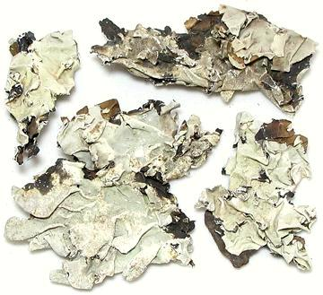

Dagad Phool

[Black Stone Flower; Dagad Phool (Marathi); Kalpasi, Kallupachi, Phathar
Ka Phool (Tamil); Riham karmani (Urdu); Kalahu (Kannada); Shaileyam (Sanskrit);
Dagar da Phool (Punjabi); Patthar ke phool (Hindi); Bojhwar, Chadila,
(northern India); Parmelia perlata of family Parmeliaceae]
This lichen is considered essential for making Goda Masala, a curry
powder used in the Marathi cuisine of Maharashtra, Goa and Karnataka. Its
earthy flavor is considered very important to the cuisine of that region,
but it is used to some extent in other regions, particularly Chettinad
(in Tamil Nadu) and Hyderabad (in Telangana). The photo specimen is from
India.
Buying:
This lichen, dried, is available for purchase on
the Internet. Some report having found it in Indian markets, but I haven't
seen it in Artesia yet. The price is rather high. The photo purchase
cost 2021 US $7 (plus shipping) for 50 grams. (1-3/4 ounces). It is
very light for its volume, so that 50 grams was 3 cups lightly packed.
Caution: The name "Dagad Phool" means "stone flower"
and is also used for star anise in parts of India. Be careful what you
are buying.
Storing:
In a sealed jar, it will keep for a year or so,
but slowly fades in flavor.
Cooking:
In general, these lichens are ground fairly fine,
often after dry pan roasting until aromatic, as are most other spices for
masalas.
More on Lichens
More on Spices.
fu_dagadz 090201 - www.clovegarden.com
©Andrew Grygus - agryg@clovegarden.com - Photos
on this page not otherwise credited © cg1
- Linking to and non-commercial use of this page permitted